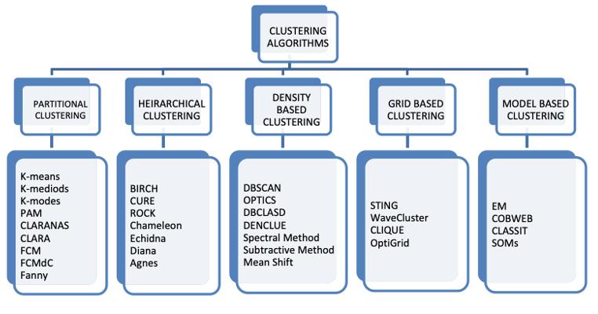
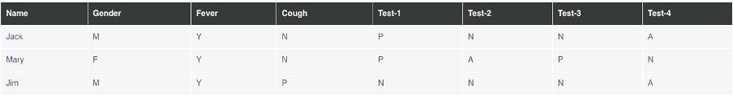

Machine Learning
Ghosal et al. (2020) define clustering as a fundamental method in unsupervised learning, aiming to group data points into clusters based on similarity, with the goal of discovering inherent structures and patterns within the dataset. The different clustering algorithms vary and range from traditional methods like K-means to more sophisticated algorithms such as hierarchical clustering and density-based clustering as shown in Figure 1 below.
Clustering plays a vital role across various domains. For example, in e-commerce, clustering can be used to group customers based on their purchase history, browsing behavior, demographics, or geographic location. This segmentation enables businesses to tailor their marketing campaigns to each segment's preferences, leading to improved customer engagement, higher conversion rates, and increased customer satisfaction.
The table shows the pathological test results for three individuals.

Question:
Calculate Jaccard coefficient for the following pairs:
• (Jack, Mary)
• (Jack, Jim)
• (Jim, Mary)
Answer:
To calculate the Jaccard coefficient for the pairs (Jack, Mary), (Jack, Jim), and (Jim, Mary), the pathological test results were converted into binary values for comparison.
That is:
The Jaccard coefficient is calculated as the size of the intersection divided by the size of the union of the sample sets.
Summary:
- Jaccard coefficient (Jack, Mary): 0.33
- Jaccard coefficient (Jack, Jim): 0.33
- Jaccard coefficient (Jim, Mary): 0.14
Ghosal, A., Nandy, A., Das, A.K., Goswami, S. & Panday, M. (2020) ‘A short review on different clustering techniques and their applications’,in: Kumar J.M. & Bhattacharya B. (eds) Emerging Technology in Modelling and Graphics: Proceedings of IEM Graph 2018, 69-83. DOI: https://doi.org/10.1007/978-981-13-7403-6_9